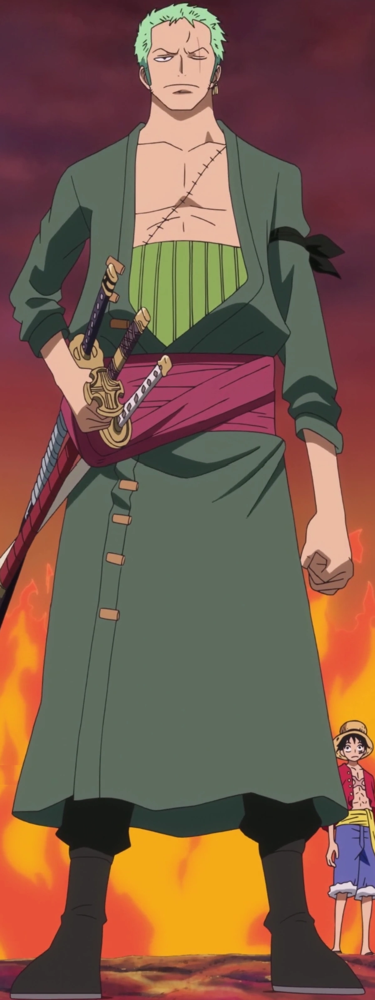
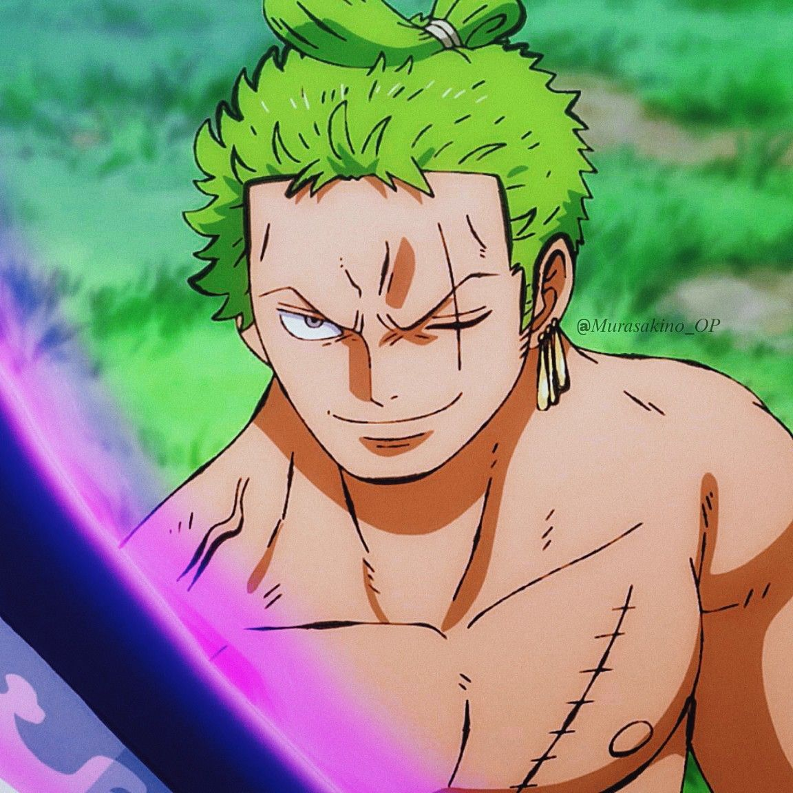

Conocido como "El Cazador de Piratas", es el espadachín de la tripulación y el segundo al mando no oficial. Su sueño es convertirse en el mejor espadachín del mundo.
Durante su infancia en la Aldea Shimotsuki, entrenaba en un dojo. Hizo la promesa a su amiga Kuina (quien falleció en un accidente) de que uno de los dos se convertiría en el mejor espadachín. Con el tiempo se hizo famoso como cazarrecompensas.
Fue el primer miembro en unirse a Luffy. Luffy lo salvó de ser ejecutado por el Capitán Morgan de los Marines en Shells Town. Tras recuperar sus espadas, Zoro aceptó unirse a cambio de que Luffy le permitiera cumplir su sueño.

Es un joven muy musculoso de piel bronceada. Destaca por su pelo de color verde (lo que le gana el apodo de "Marimo" por parte de Sanji). Tras el salto temporal de dos años, obtiene una cicatriz vertical sobre su ojo izquierdo, el cual mantiene cerrado. Suele llevar tres pendientes de oro en la oreja izquierda y un haramaki verde en la cintura, donde sujeta sus tres espadas.

Rol: Espadachín
Apodo: El Cazador de Piratas
Recompensa actual: 1.111.000.000 Berries
Lugar de origen: East Blue
Estilo de combate: Santoryu